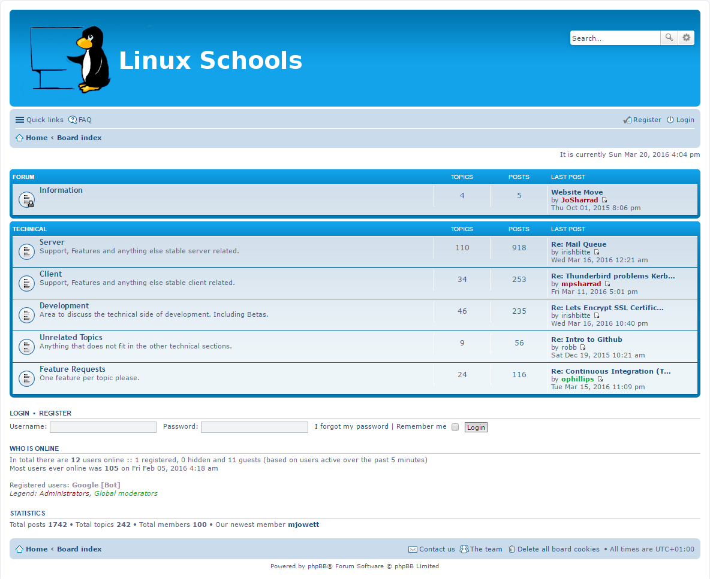

Checkout the documentation, this covers most common errors and questions.
Feel free to post on the forum, our active community and developers will try to get back to you as soon as possible.
We have an IRC channel, you can ask here.
Found an issue that you would like to report to our developers, checkout the forum or flag the issue on Github.

The Linux Schools Forum
Forum and Documentation:
http://www.linuxschools.com
Github:
@the-linux-schools-project
IRC:
freenode.net #karoshi

Github: Karoshi-Client